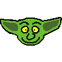
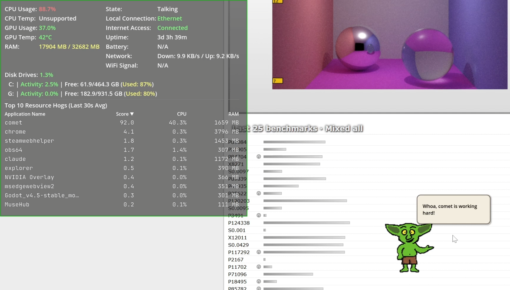
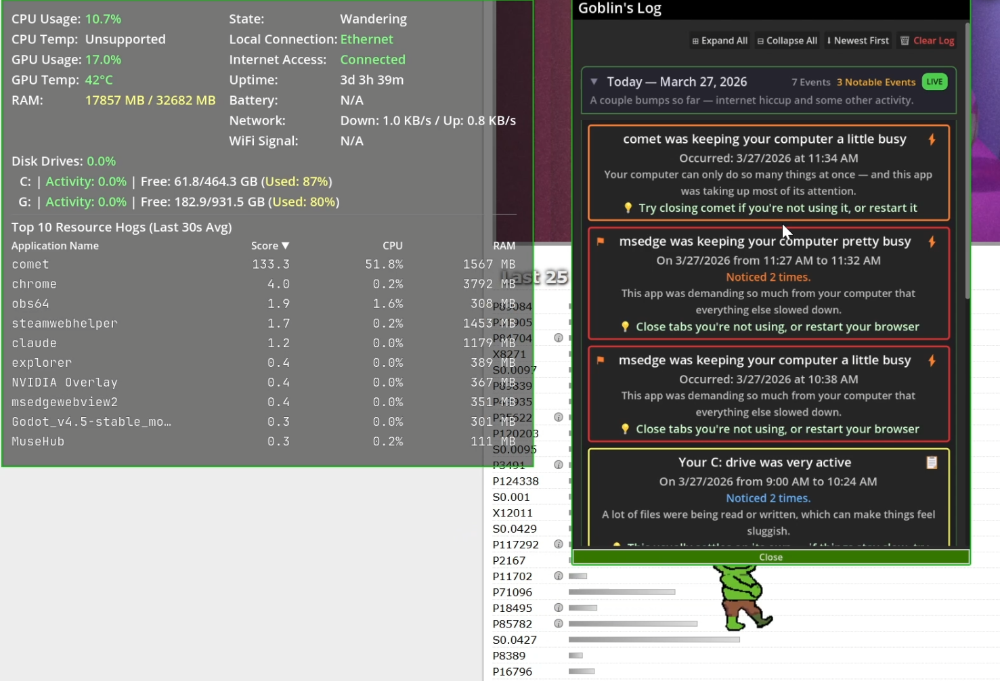
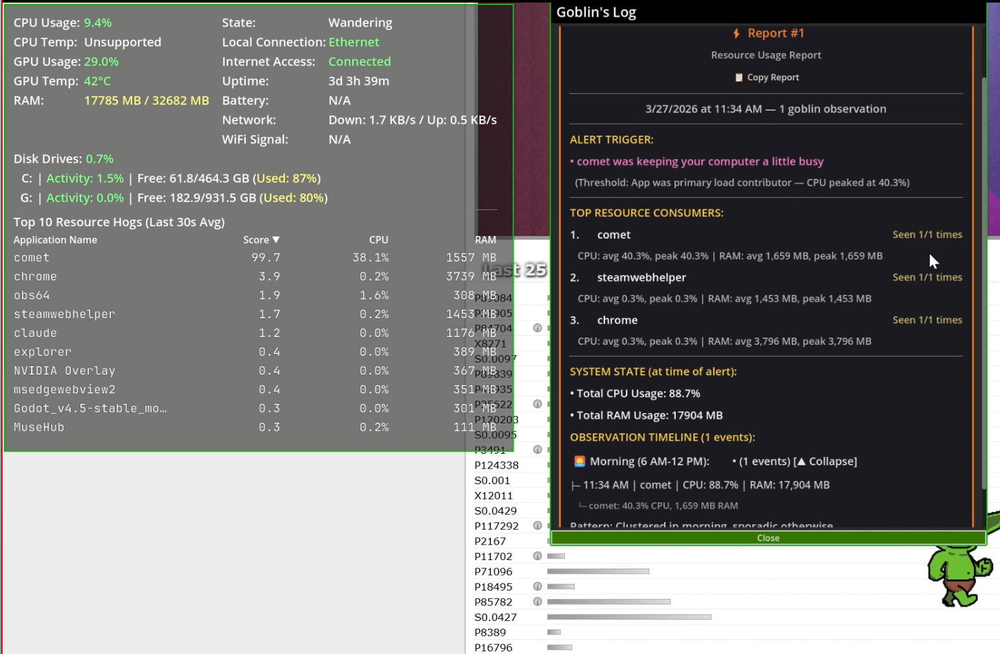

"Your computer's health... as explained by a goblin. Now, who doesn't want that!?"
Desktop Goblin is a lightweight desktop companion that monitors system health in real-time and explains what’s happening — in plain English.
Supports Windows & macOS

CPU, RAM, Disk, Network, Battery, GPU, Wifi Signal Strength - all visible in a persistent overlay that stays on your desktop. No windows to open, no apps to check. Just glance and know.
Task Manager, Activity Monitor: these show you numbers. Your goblin tells you what they mean in plain, friendly language. No computer experts needed for interpretation.
Get notified about the stuff that actually matters. Pattern-based warnings catch real problems, not random spikes - so you hear from him when it counts.
A full history of what's been happening on your system, grouped by day with trends you can actually read. Simple mode for quick checks, advanced mode for power users.
Customize alert thresholds, appearance, and font size to fit your setup. Want him quiet? Mute him. Want to know sooner when things go wrong? Lower the thresholds.
A few built-in mini-games for when you both need a break. Nothing fancy - just killing 20 seconds while you're waiting for that document to open.
Status window, logbook, speech bubbles — the whole package.



Hey — Chrome's been using a lot of resources for the last 20 minutes.
That's probably why things feel slow right now.
— Your Desktop Goblin, keeping an eye on things